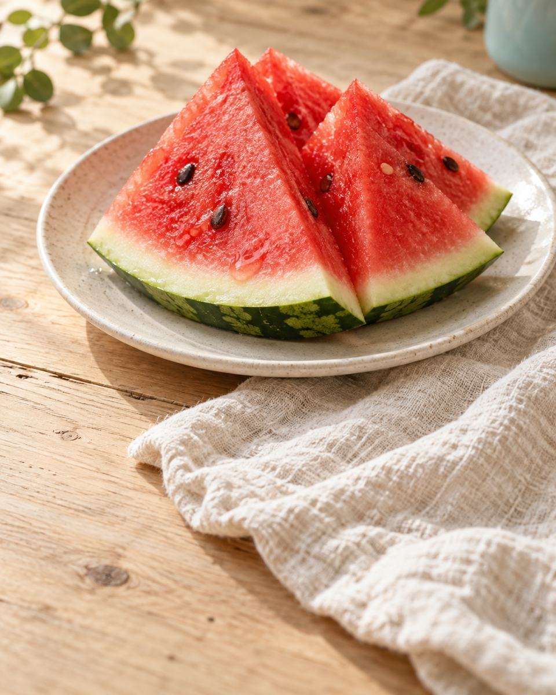
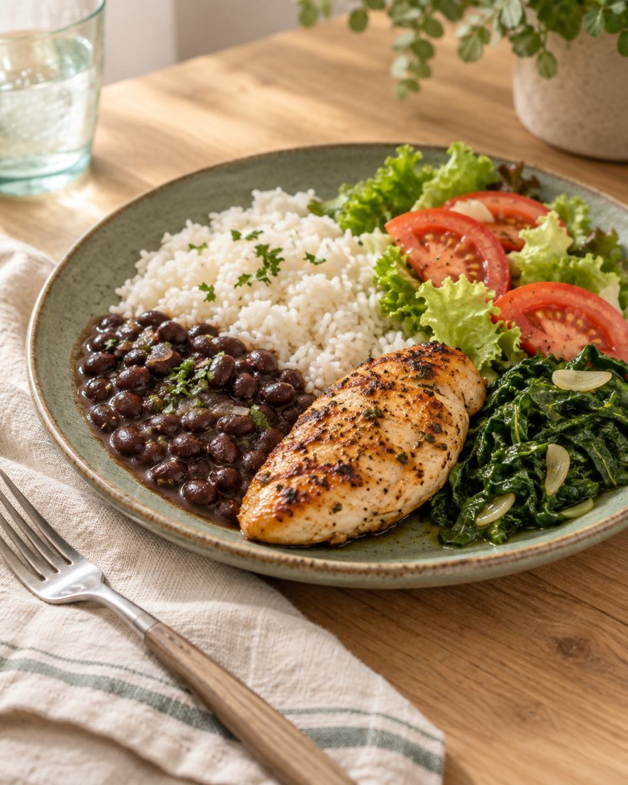
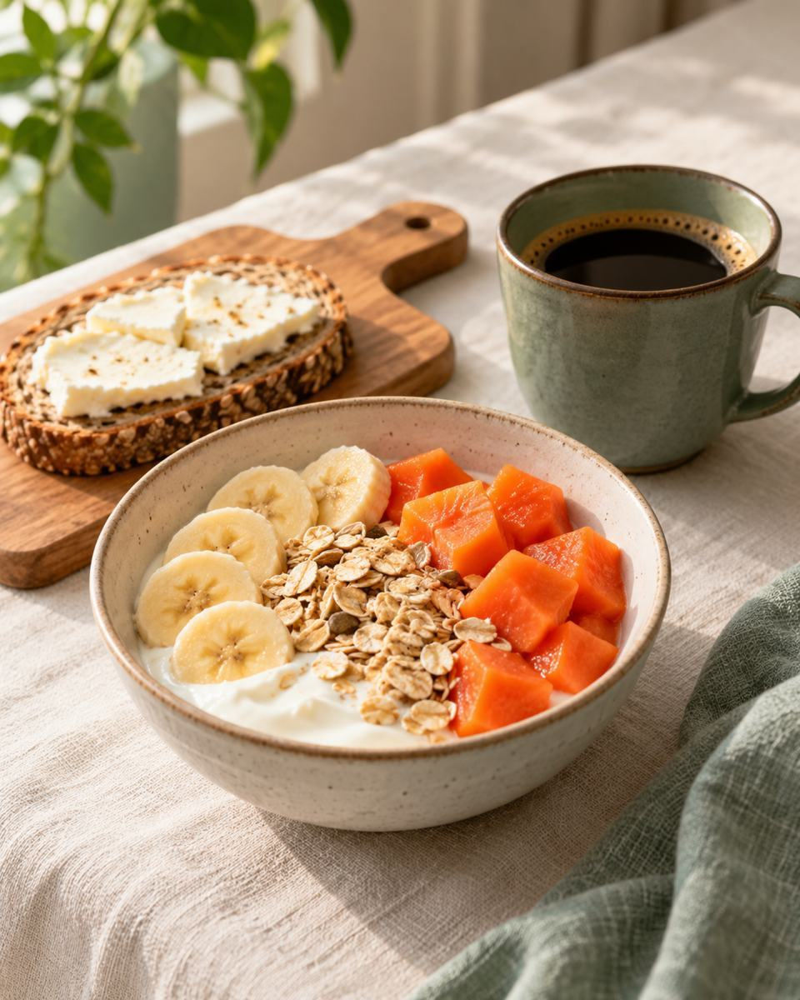
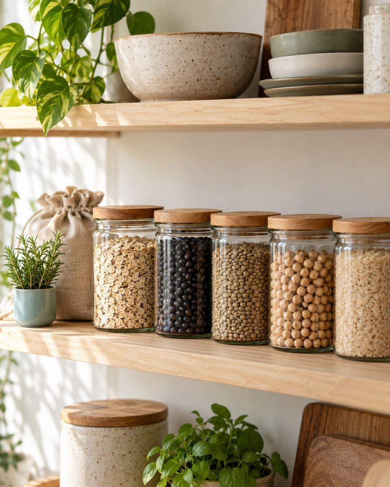
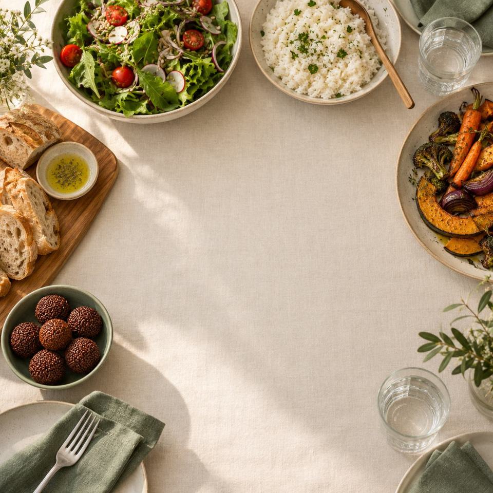

Emagrecimento com calma
Sem data marcada no calendário.
Nutricionista Hérica da Silva Ebertz · CRN-10 nº 14437 · Centro, Florianópolis Conversar no WhatsApp
NUTRICIONISTA · CRN-10 Nº 14437
Emagrecimento sem terrorismo alimentar, no Centro de Florianópolis.
O ACOMPANHAMENTO
Os temas e as refeições que o acompanhamento olha com você.

Sem data marcada no calendário.

Como você se sente antes e depois de comer.
A comida que você já leva para casa.

A primeira refeição de quem sai correndo de casa.

Orientação apoiada em estudos, longe da dieta da moda.
Não sabe por onde começar?
Conversar no WhatsApp
Liberdade · Consciência · Consistência
01 · A COMIDA
Se hoje você tem medo da comida, dá para falar disso logo na consulta.
02 · A SEMANA
A Hérica monta o plano conforme a sua necessidade e escuta o que você conta.
03 · NO WHATSAPP
A Hérica acompanha você por WhatsApp e dá dicas.
COMO FUNCIONA
Escreva do seu jeito o que você procura e combine o dia da consulta.
Na consulta, a Hérica explica tudo com clareza. Se quiser, conte como é um dia seu, do acordar ao jantar.
Você recebe um plano alimentar personalizado. O acompanhamento segue a partir daí.
PARA QUEM
Hérica Ebertz, nutricionista
SOBRE
Emagrecimento sem terrorismo alimentar. Nutrição baseada em ciência.
Liberdade, consciência e consistência: é isso que eu ensino pras minhas pacientes.
Não é rápido. Não é simples… eu sei, eu entendo.
Eu vivo o processo. Te ajudo a viver o seu também.
ONDE FICA
O endereço completo vai pelo WhatsApp quando você agendar.
DÚVIDAS
Valor, duração e convênio são informados na primeira conversa pelo WhatsApp. Pergunte na mensagem, sem compromisso.
Conte na consulta o que você não quer deixar de comer, do pão de manhã ao chocolate da tarde. Isso também é informação para o plano.
Pode chamar do mesmo jeito. As dietas que você já tentou ajudam a Hérica a entender a sua relação com a comida.